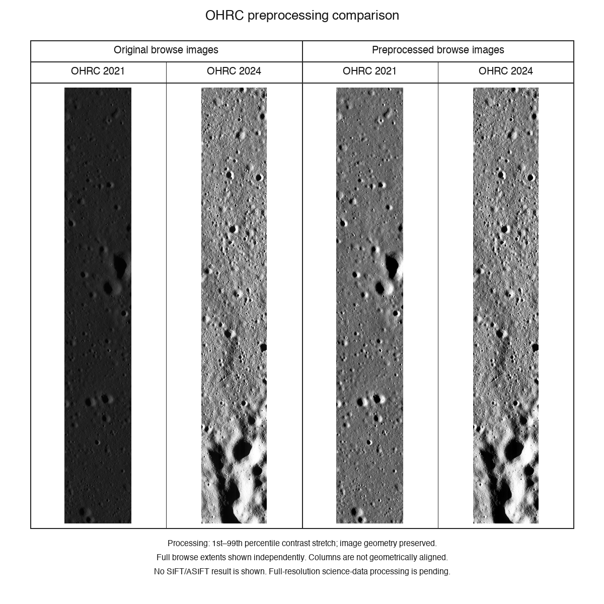
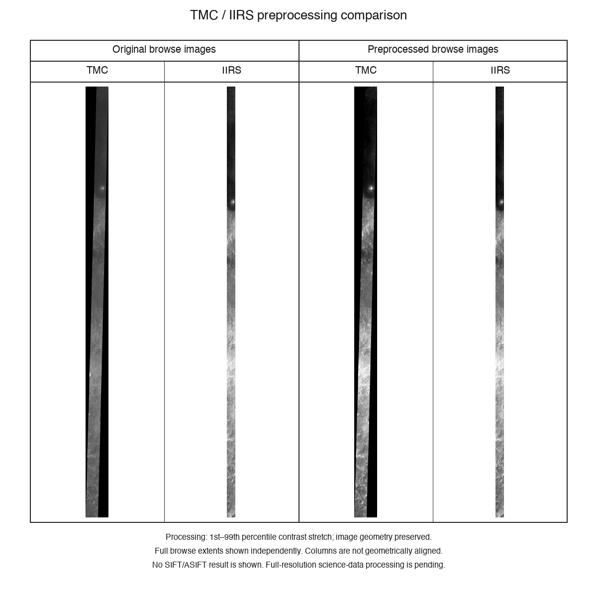
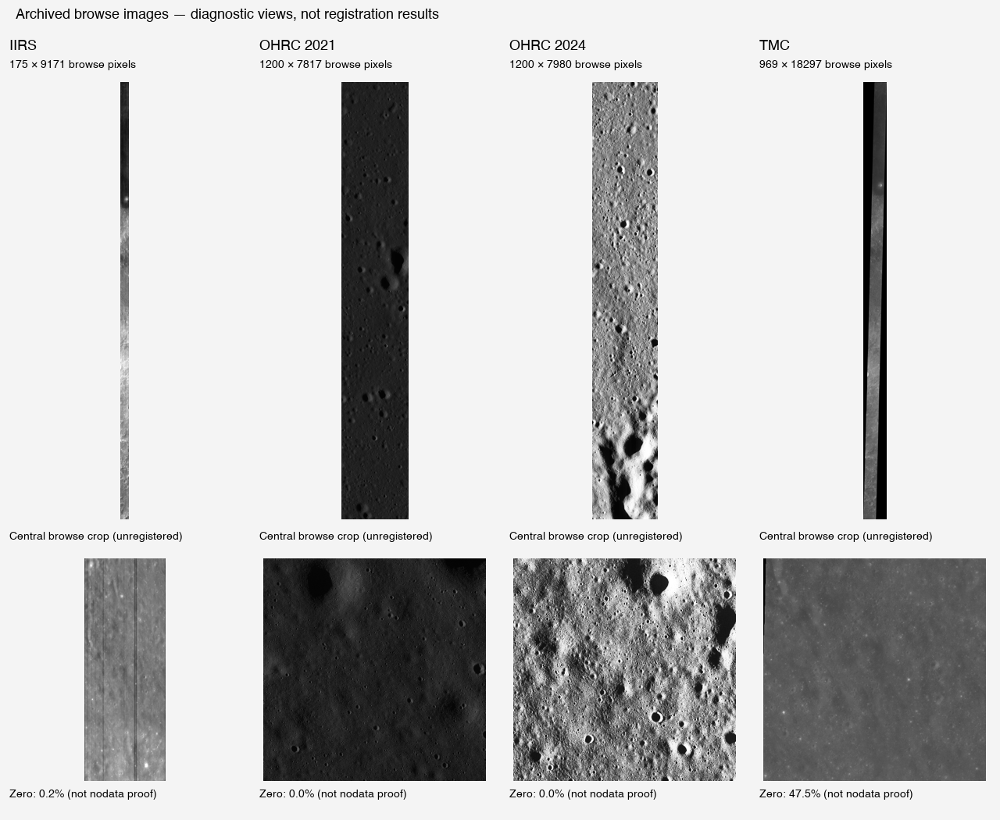
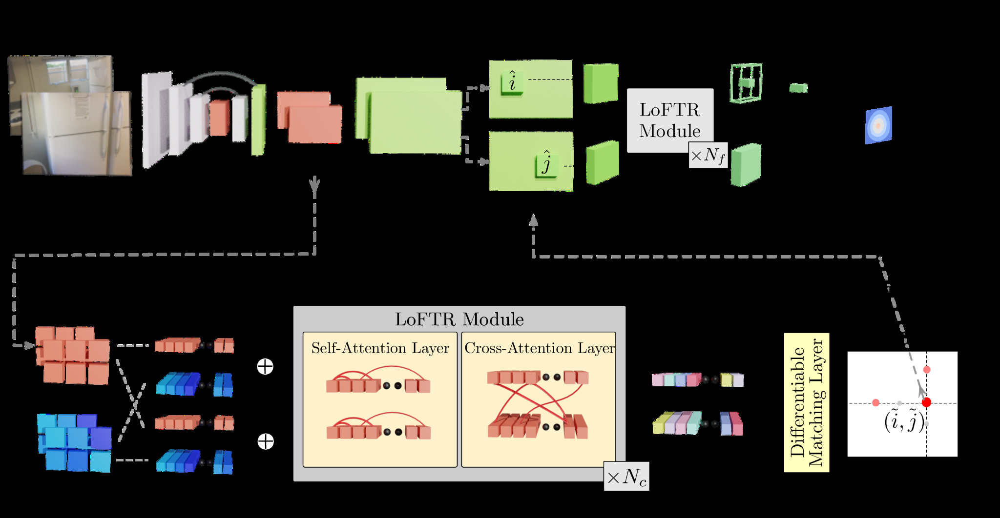
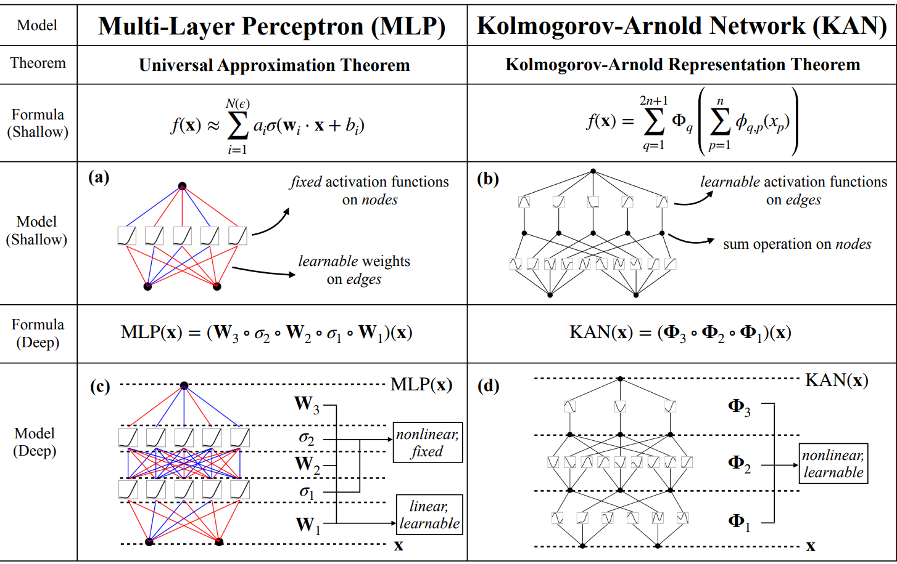
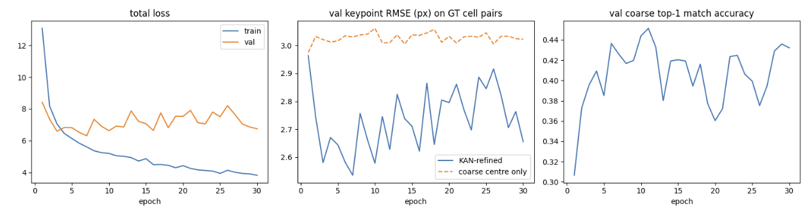
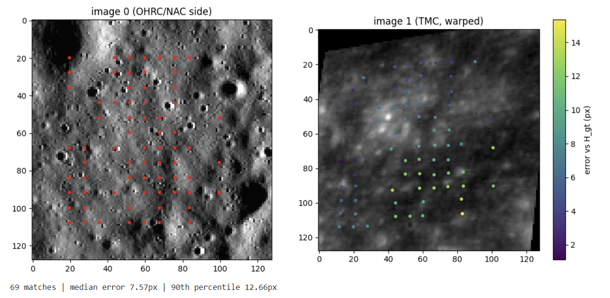

Project overview
This project focuses on cross-sensor lunar image registration: establishing reliable image correspondences between lunar observations acquired by different instruments under different imaging conditions.
Our workflow is built around Chandrayaan-2 imagery, preprocessing, dataset preparation, transformer-based correspondence matching and evaluation.
Scope
The work combines:
- Chandrayaan-2 OHRC, TMC-2 and IIRS imagery.
- LRO NAC images as reference imagery over the same lunar regions.
- Different illumination, scale and viewing conditions.
- LoFTR-based correspondence detection with targeted fine-tuning.
- KAN-based replacement of the transformer’s final layer.
- Confidence filtering and robust geometric-transform estimation.
The objective is to make correspondence detection more reliable across sensors and challenging lunar terrain such as craters and sharp shadows.
Dataset collection
The dataset was assembled from Chandrayaan-2 OHRC, TMC-2 and IIRS imagery collected from ISRO, together with LRO NAC reference images covering the same lunar regions.
Dataset preparation
- Verify image metadata, dimensions, spatial resolution, acquisition time, Sun angles and file integrity.
- Compare geographic footprints to identify pairs containing common lunar terrain.
- Read PDS
.IMG,.TIFand spectral-image formats using GDAL together with their metadata. - Convert suitable inputs to GeoTIFF-compatible processing formats while preserving lunar coordinate information.
The resulting pairs span different illumination, scale and viewing conditions so that correspondence matching is tested across sensor and imaging differences.
Preprocessing pipeline
The preprocessing stage converts the raw observations into spatially consistent inputs for registration.
Processing steps
- Create validity masks to remove exterior padding and invalid pixels while retaining genuine dark shadow regions.
- Resample images to a common spatial resolution using antialiased downsampling so terrain structure is not unnecessarily lost.
- Project moving and reference images onto a common lunar coordinate grid.
- Apply percentile-based intensity normalization to reduce sensor-dependent brightness and contrast differences.
- Prepare spatially aligned image tiles containing moving images, fixed images, validity masks and correspondence transformations.
Preprocessing examples



Training data and transformations
The aligned data are divided geographically into training, validation and test sets so that separate lunar regions prevent geographic leakage between splits.
Controlled transformations are then introduced with exactly known ground truth:
- rotation
- translation
- scale
- illumination changes
Each training example therefore retains a correspondence transformation that can be compared directly with the model’s predicted geometry during evaluation.
LoFTR fine-tuning
The matching backbone is LoFTR. The project fine-tunes LoFTR’s coarse-attention module while keeping the pre-trained ResNet unchanged.
Our motivation was to adapt correspondence detection to different lunar imaging sensors while keeping the computational cost lower than retraining the complete network.
The pre-trained ResNet is retained because it can capture useful features across bright and shadowed environments, which is important for Sun-angle variation.

KAN-based transformer output
We investigate a Kolmogorov-Arnold Network (KAN) as a replacement for the transformer’s last layer.
Traditional neural-network layers learn fixed weight matrices. KAN places learnable one-dimensional spline functions on the edges of the network instead of using the conventional weight representation of the final layer.
KAN is presented as an alternative neural-network formulation derived from the Kolmogorov Representation Theorem.
Why use KAN here?
LoFTR fine module can produce over-smoothed predictions near craters and sharp shadows. Because the KAN uses continuous B-spline functions, the project investigates whether local information can be interpolated at sub-pixel scale without losing localized structure.

Filtering and evaluation
Predicted correspondences are filtered with confidence checks before estimating a robust geometric transformation.
The evaluation several complementary measures:
| Metric | What it captures |
|---|---|
| Match count | Number of predicted correspondences |
| Inlier ratio | Fraction of correspondences consistent with the estimated geometry |
| Ground-truth error | Difference from the known transformation |
| Corner-transfer error | Geometric transfer accuracy at image corners |
| Spatial match coverage | How widely correspondences are distributed over the image |
These measures are used together rather than relying on a single count of matches, because the quality and spatial distribution of matches matter for image registration.
Outputs and examples
Fine-tuning output

OHRC and TMC correspondence outputs
